Setup - Linux#
1. Requirements#
You must have some Arch or Debian based Linux 64-bit, preferably Manjaro or Ubuntu. ARM architecture is not supported at the moment.
To run the game you must have Vulkan available. You can check if Vulkan is in your system by looking for the Vulkan library:
sudo find /usr -name "libvulkan.so". This library is installed with your graphics drivers.It is recommended to use JetBrains CLion
2. Install dependencies#
You will need the Clang LLVM toolchain, Git, CMake, pkg-config, Ninja Build, and some additional packages needed for the dependencies.
# Debian/Ubuntu
sudo apt-get install git cmake ninja-build clang llvm curl zip unzip tar pkg-config gdb \
autoconf automake libtool libxinerama-dev libxcursor-dev xorg-dev \
libglu1-mesa-dev libc6-dev linux-libc-dev liburing-dev
# Arch
sudo pacman -S git cmake ninja clang curl zip unzip tar pkg-config gdb \
autoconf automake libtool
3. Option A: Command line only#
Note
To get the best experience developing this game, it is recommended to use an IDE. See the section for the Visual Studio Code below, or the section for the JetBrains CLion below.
First, you will need to clone the source code and fetch the git submodules.
git clone https://github.com/temporary-escape/temporary-escape.git
cd ./temporary-escape
git submodule update --init
Next, create a build directory. This directory will contain the temporary files for compiling the game.
mkdir ./build
Next, configure the project with CMake. Choose the ninja-linux preset and use the Debug build type. This
needs to be done only once. When you delete the build folder you must re-do this step.
Warning
This next command will download all of the C++ dependencies, compile them, and configure the game’s source code. This may take up to 1 hour to complete and may take up to 3GB of disk space. The dependencies are installed locally within the build folder only.
Hint
Debug builds are useful for debugging, but it makes the game slow. This is especially noticable when
generating a new universe. It may take up to 10x longer. Prefer to use Release unless you need debugging support.
# This may take up to 1 hour to complete!
cmake --preset ninja-linux \
-DCMAKE_BUILD_TYPE=Debug \
-DCMAKE_INSTALL_PREFIX=./install
At the end you should see something as “Build files have been written to: bla bla bla”.
Next, compile the game. You can replace the -j X with number of CPU cores available on your computer.
cmake --build ./build --target TemporaryEscapeMain -j 4
At the end you should see something as “Linking CXX executable TemporaryEscape”.
To run the game, you must run it with --root argument pointing to the cloned repository.
Warning
When running the game in a singleplayer or multiplayer mode for the first time from the source code, the game will compile shader code and will compress the textures from png format into ktx2 format. This may take several minutes. This is done only once.
# Run the game with --root argument pointing to the cloned repository!
./build/TemporaryEscape --root $(pwd)
3. Option B: Visual Studio Code#
Install Visual Studio Code and make sure you have the latest updated version.
Once installed, make sure to install the CMake Tools extension by looking for “cmake” and installing the “CMake Tools” by Microsoft.
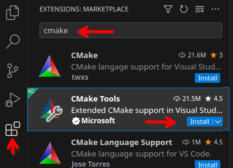
You will also need to install “C++” extension by Microsoft.
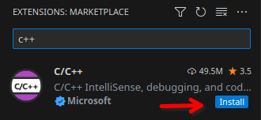
Next, open the terminal and clone the game source code somewhere into your system.
git clone https://github.com/temporary-escape/temporary-escape.git
cd ./temporary-escape
git submodule update --init
Next, open that cloned repository folder and make sure to select “Trust” when asked to.
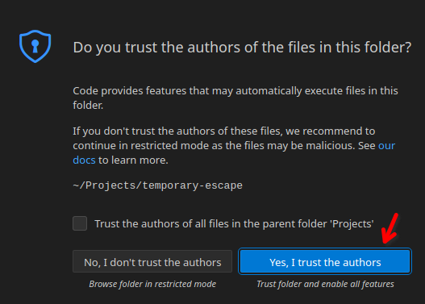
Next, open the command panel (press keys [Ctrl] + [P]) and type “> cmake configure”, select the “CMake: Configure” option.
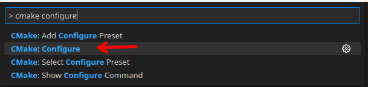
When asked about the preset, select the “Ninja Clang” one.
Warning
This will download all of the C++ dependencies, compile them, and configure the game’s source code. This may take up to 1 hour to complete and may take up to 3GB of disk space. The dependencies are installed locally within the build folder only.
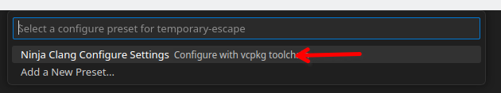
When asked about the test preset, select the “ninja-linux” one.
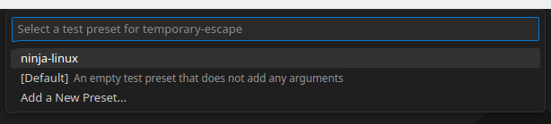
At the end you should see something like this with “Build files have been written to: …”.
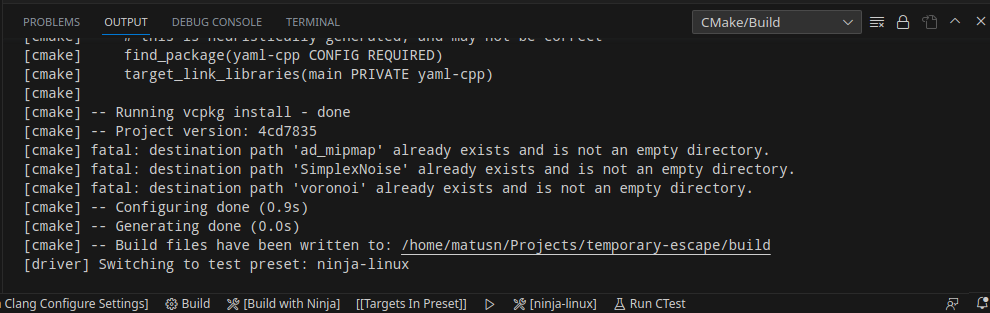
Next, to build the game, go to the CMake options in the sidebar, and click on the build icon in the top bar.
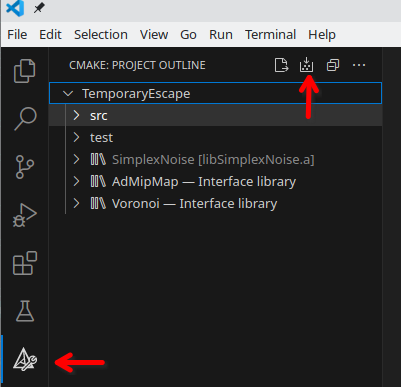
Once built, you should see something like this:
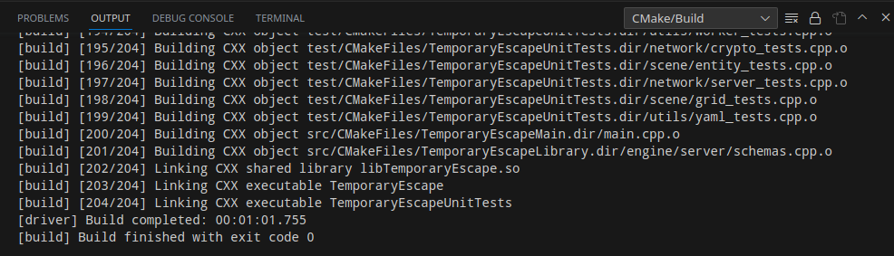
To launch the game with debugger through Visual Studio, you must create a new launch configuration launch.json
in the .vscode folder. If the folder does not exist, create it. Use the following contents below for the
launch.json file:
{
"version": "0.2.0",
"configurations": [
{
"type": "cppdbg",
"cwd": "${workspaceFolder}/build",
"request": "launch",
"name": "Debug TemporaryEscape",
"program": "${workspaceFolder}/build/TemporaryEscape",
"args": [
"--root",
"${workspaceFolder}"
],
"MIMode": "gdb",
"miDebuggerPath": "/usr/bin/gdb",
"setupCommands": [
{
"description": "Enable pretty-printing for gdb",
"text": "-enable-pretty-printing",
"ignoreFailures": true
}
]
}
]
}
Once the launch.json is created, go to the “Run and Debug” panel by clicking the play button from the side menu.
Select “Debug TemporaryEscape” and click the play icon button.
Warning
When running the game in a singleplayer or multiplayer mode for the first time from the source code, the game will compile shader code and will compress the textures from png format into ktx2 format. This may take several minutes. This is done only once.
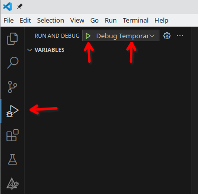
To run the game from command line, you must do it as the following:
# Run the game with --root argument pointing to the cloned repository!
./build/TemporaryEscape --root $(pwd)
3. Option C: JetBrains CLion#
Install JetBrains CLion.
Once installed, open a terminal and clone the game source code somewhere into your system.
git clone https://github.com/temporary-escape/temporary-escape.git
cd ./temporary-escape
git submodule update --init
Next, open CLion and open the cloned repository as a folder.
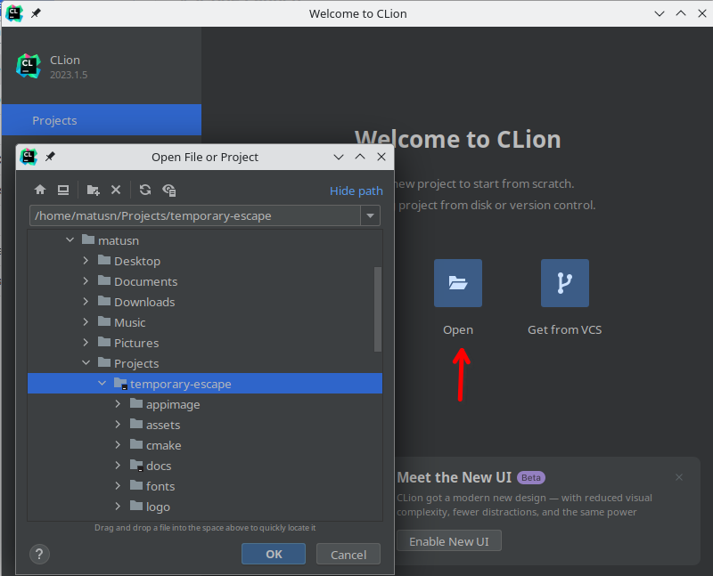
When asked about trusting the project, click “Trust Project”.
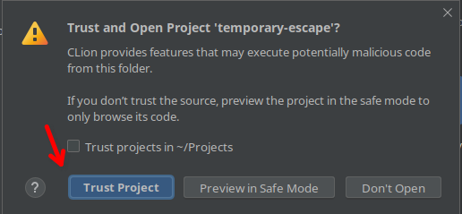
Once the project is open, you should see “Open Project Wizard” window. Either modify an existing “Default” toolchain
or add a new one. For the “C Compiler” type in clang and for the “C++ Compiler” type in clang++. The “Debugger”
should be “Bundled GDB” for the best experience. Then click “Next”.
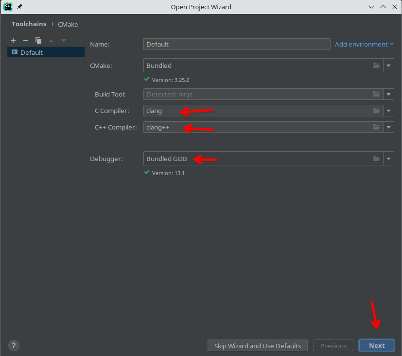
On the next page, select the toolchain you have modified (e.g. Default), choose Ninja for the “Generator”.
In the “CMake options” add in the following option:
-DCMAKE_INSTALL_PREFIX=./build/install
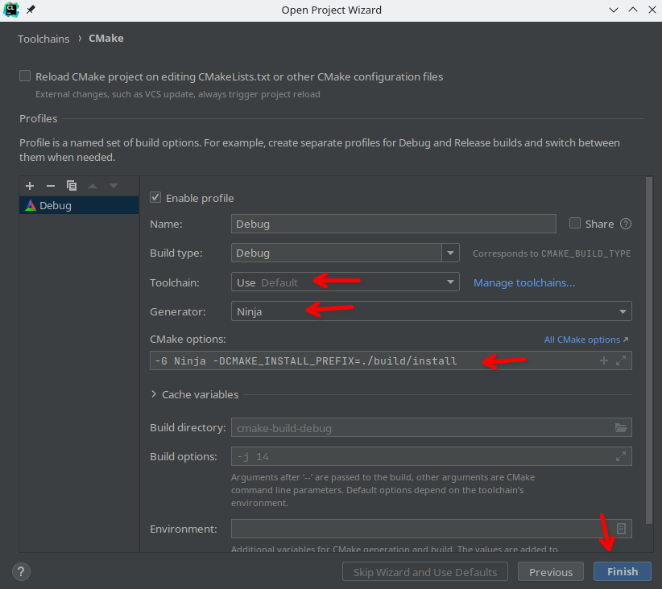
And finally click Finish.
Warning
This will download all of the C++ dependencies, compile them, and configure the game’s source code. This may take up to 1 hour to complete and may take up to 3GB of disk space. The dependencies are installed locally within the build folder only.
Once configured, you should see something as “Build files have been written to: bla bla bla” in the “CMake” tab at the bottom.
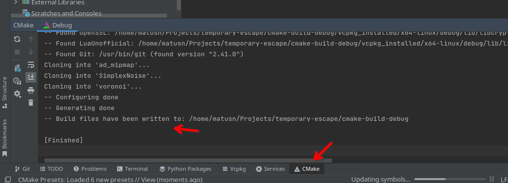
To build the game select the “TemporaryEscapeMain” from the dropdown in the top menu bar, and click the build icon next to it.
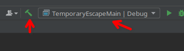
Once built you should see something as the following:
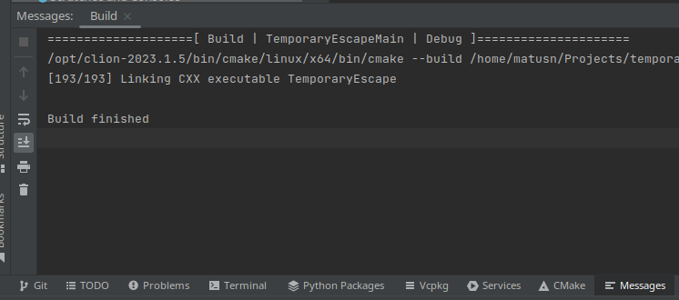
To play and debug the game, you must first edit the configuration for the “TemporaryEscapeMain” target. Click the down icon in the dropdown in the top menu bar, and select “Edit Configurations” from the dropdown.
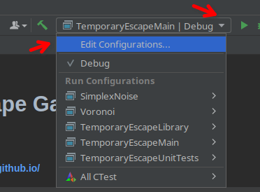
You must add a program argument --root followed by a space followed by the exact path to the source code of the game.
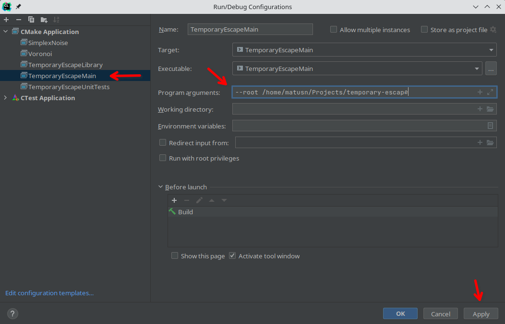
And finally click play button (left icon). To run with a debugger click the second button (right icon).
Warning
When running the game in a singleplayer or multiplayer mode for the first time from the source code, the game will compile shader code and will compress the textures from png format into ktx2 format. This may take several minutes. This is done only once.
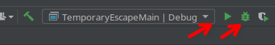
To run the game from command line, you must do it as the following:
# Run the game with --root argument pointing to the cloned repository!
./build/TemporaryEscape --root $(pwd)
4. Installing the game (optional)#
To install the game, open a command line, go to the project folder, and type the following command below.
Make sure that you have used -DCMAKE_INSTALL_PREFIX=/some/path during the configuration. If you are using
a CMake preset (via --preset) then the install folder is going to be a directory named install inside the
project folder. It will be created during the install command as shown below.
# If you are using CLion the folder is most likely "cmake-build-debug" or "cmake-build-release"
cmake --build ./build --target install
5. Creating an AppImage or a tar package (optional)#
To create a tar.gz package, open a command line, go to the project folder, and type the following command below.
# If you are using CLion the folder is most likely "cmake-build-debug" or "cmake-build-release"
cmake --build ./build --target package
To create an .AppImage you first must download appimagetool and put it somewhere in your system.
Use the command below to install the tool.
sudo wget https://github.com/AppImage/AppImageKit/releases/download/continuous/appimagetool-x86_64.AppImage -O /usr/bin/appimagetool
sudo chmod +x /usr/bin/appimagetool
The following command below will create the AppImage using the tar.gz package file. Use the command above (cmake target package) to create the tar package.
./appimage/build.sh /path/to/temporary-escape-<version>.tar.gz
6. Vulkan validation layers (optional)#
The validation layers are useful for debugging Vulkan issues. This is enabled at runtime and does not need re-compiling. To use the validation layers you must first download and install Vulkan SDK into your system.
Download Vulkan SDK version 1.3.239.0 from
the Vulkan SDK official download page.
Or you can use
an unofficial mirror link here.
Extract the SDK into your system, for example into the /opt/vulkan-sdk/1.3.239.0 folder.
When starting the game, modify the environment variable with:
# Go to the project folder
# Then make sure to set these environment variables
export VULKAN_SDK=/opt/vulkan-sdk/1.3.239.0/x86_64
export LD_LIBRARY_PATH=${LD_LIBRARY_PATH}:/opt/vulkan-sdk/1.3.239.0/x86_64/lib
export VK_LAYER_PATH=/opt/vulkan-sdk/1.3.239.0/x86_64/etc/vulkan/explicit_layer.d
# Then start the game
./build/TemporaryEscape --root $(pwd)
Note
The game will pick up the VK_LAYER_PATH and will enable the validation layers when the game starts.
The game will stop and exit immediately if the validation layers can not be setup. This may
happen if your Vulkan SDK folder is wrong or the environment variables are wrong. Look into
the log file in your ~/.temporary-escape/ folder.
If you are using JetBrains CLion, you can modify the “Run Configuration” for the “TemporaryEscapeMain” target (the dropdown in the top menu bar). Add these environment variables as shown below.
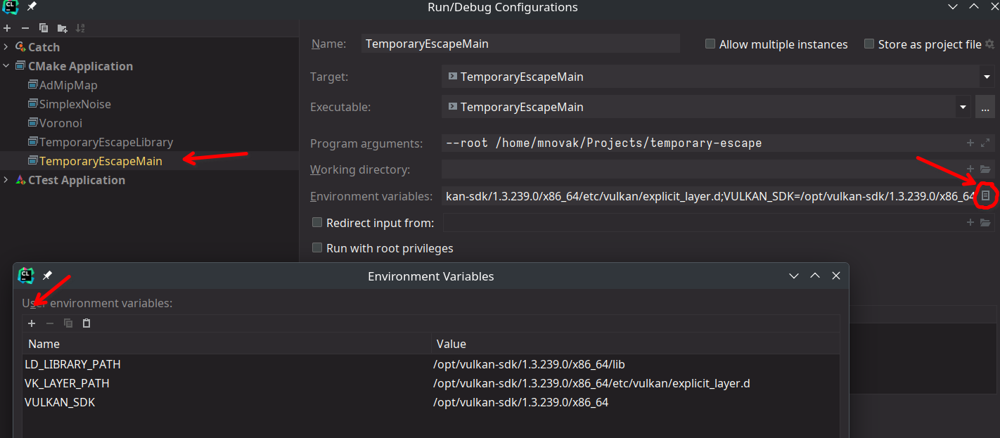
If you are using Visual Studio Code, you can modify the launch.json file in the .vscode folder. Simply
add those variables into "environment": [] property as shown below.
{
"version": "0.2.0",
"configurations": [
{
"type": "cppdbg",
"name": "Debug TemporaryEscape",
"environment": [
"VULKAN_SDK=/opt/vulkan-sdk/1.3.239.0/x86_64",
"LD_LIBRARY_PATH=/opt/vulkan-sdk/1.3.239.0/x86_64/lib",
"VK_LAYER_PATH=/opt/vulkan-sdk/1.3.239.0/x86_64/etc/vulkan/explicit_layer.d"
]
// Other stuff here
}
]
}